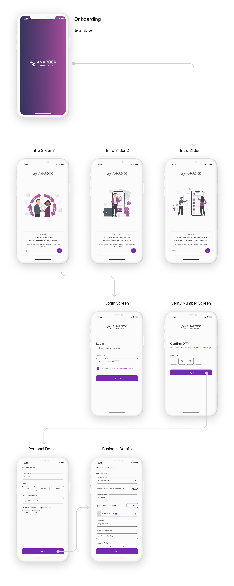
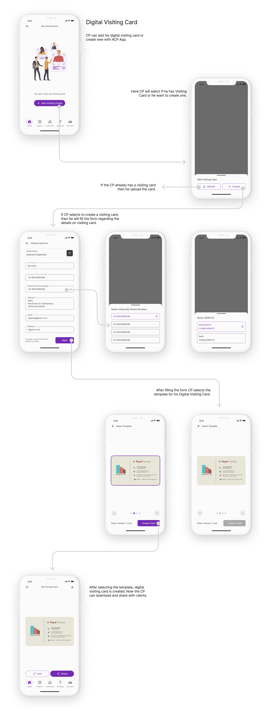

An Application for Govt. of Maharashtra UI Case Study
Anagrow is a B2B Platform for channel partners(brokers) to view listing of properties and sell them to clients. App allows CPs to manage all their clients with the help of CRM which is inbuild in the app and also after selling the property CPs can manage all the finance proceeding in the app itself with the help of CM(commission management). CPs get exciting offers and early commission on the selling of properties with Seal of Trust.
Problem Statement
The current system for channel partners (CPs) to manage property listings, client interactions, and commissions faces usability challenges. Complex workflows, a cumbersome CRM interface, and confusing commission tracking reduce CP efficiency. Additionally, offers and the Seal of Trust, which are essential for boosting sales and client credibility, are not easily accessible. A UI/UX redesign is needed to simplify navigation, improve CRM and CM usability, and enhance the visibility of key features, empowering CPs to manage clients and close deals more effectively.
UX Researcher,
Duration
July/22 - Jan/23 (4 Months)
Target Audicence
ASHA(), ANM()
Flows and UI Designs
Userflows
First time user will onboard by using number and OTP following with the filling personal details and then continues by choosing between he owns an organisation or he is individual CP. CP also has to fll his organisation details like RERA details.
Style Guide
First time user will onboard by using number and OTP following with the filling personal details and then continues by choosing between he owns an organisation or he is individual CP. CP also has to fll his organisation details like RERA details.
Module 1 - Channel Partner(CP)/Organisation Onboarding
First time user will onboard by using number and OTP following with the filling personal details and then continues by choosing between he owns an organisation or he is individual CP. CP also has to fll his organisation details like RERA details.
Module 2 - Digital Visiting Card
Digital Visiting Card is a CP's visiting card which he can share with the potential clients to let them know that he is with the organisation or he has official RERA ID. Here user can create the visiting card by filling all the necessary details and then choose of the templete to select his visiting card. User can also upload the existing visiting card by uploading it.
